Beide Screenshots aus demselben Build (Branch td/landing-page, Commit 46c8e61).
Links immer die Landingpage, rechts die App (Paper-Theme, echte Daten aus Pocketbase).
Werte stammen aus landing.css, index.css und DeckPanel.tsx — nicht aus den Pixeln geraten.
| Token | Landing | App (Paper) | Delta |
|---|---|---|---|
| Hintergrund | #f7f3ea, Karten #fffdf7 |
#f4ede0, Surface #faf6ec |
Landing eine Stufe heller und „papierweißer“; App wirkt gelblicher |
| Akzent | #8a3324 (Oxblood) |
#a85a2a (Burnt Orange) |
Größter sichtbarer Unterschied. Zwei verschiedene Markenfarben |
| Ink / Muted | #262117 / #756b58 |
#2a2419 / #7a6f5e |
praktisch identisch — passt |
| Linien | solid #ddd5c4 |
rgba(42,36,25,.1) |
optisch gleichwertig — passt |
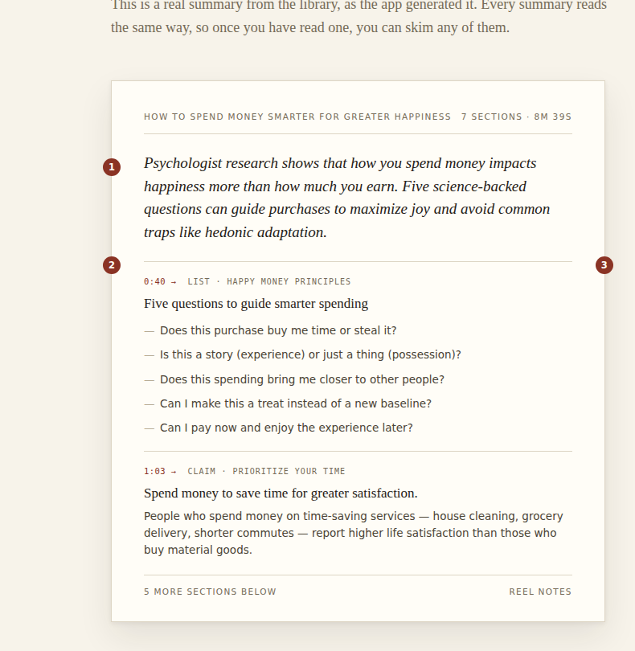
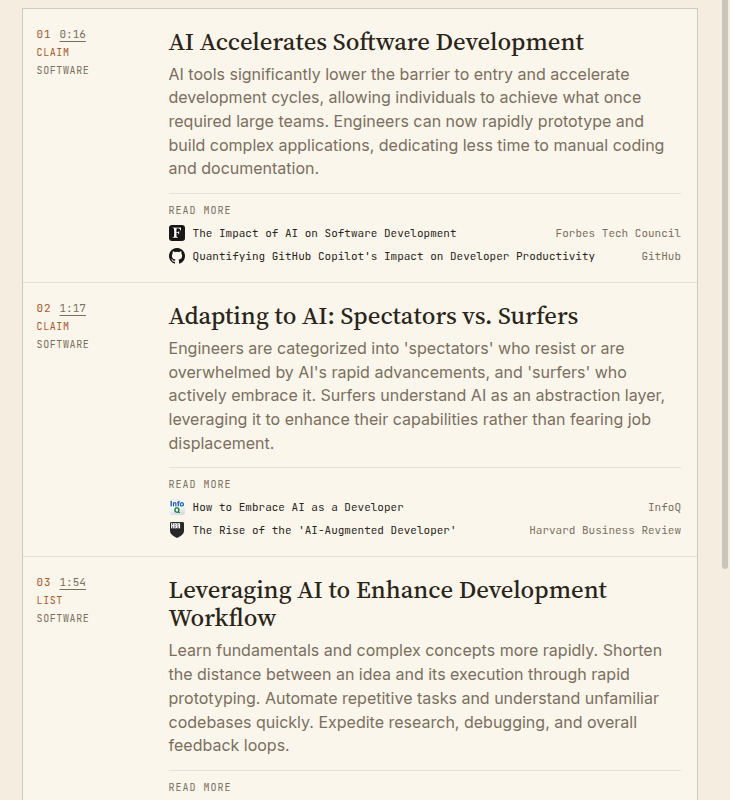
| Element | Landing | App | Delta |
|---|---|---|---|
| Grundschrift | Serif (Source Serif 4) als Body-Font der ganzen Seite | Sans (Inter) als Body-Font; Serif nur Titel + TLDR | Landing liest sich wie Magazin, App wie Anwendung — für UI ok, im Deck sichtbar |
| TLDR | Serif 19px kursiv | Serif 19px aufrecht (tldrStyle) |
Landing verkauft die These als „kursiver Leitsatz“ — App löst das nicht ein |
| Section-Body | Sans 13.5px, Farbe #4a4335 (dunkel) |
Sans, Farbe var(--muted) (hell) |
App-Fließtext deutlich blasser als beworben |
| Labels | Sans, letter-spacing 0.13em (Karten-Header) | Mono überall (EDITORIAL STRIP, READ MORE, …) | zwei Label-Systeme; App-Mono ist konsequenter |
| Kursiv als Stilmittel | Wortmarke, Feature-Titel, Zitate, TLDR | nur Community-Zitate | Landing nutzt Kursiv als Markenzeichen, App fast gar nicht |
Landing: Chip in Akzentfarbe mit Pfeil 0:40 →, Meta in einer Zeile über dem Titel.
App: linke 128px-Spalte mit 01 0:16 (Index + unterstrichener Muted-Link), darunter CLAIM und Topic.
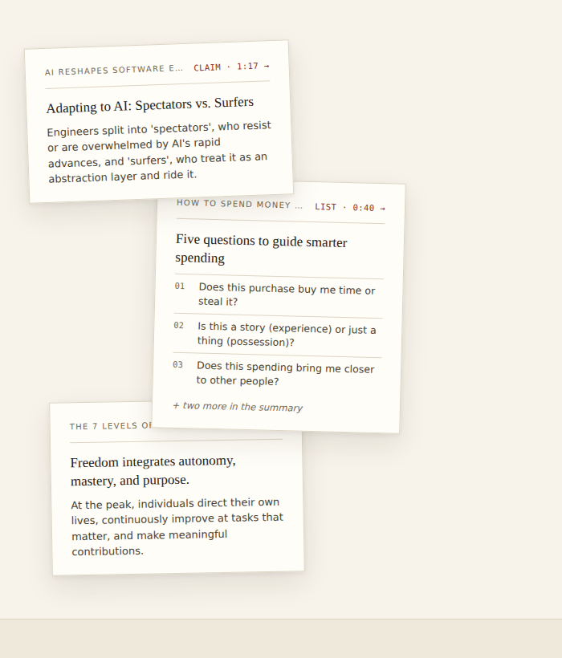
| Detail | Landing | App |
|---|---|---|
| Timestamp-Farbe | Akzent (#8a3324), kein Underline, Pfeil → | var(--muted), underline, kein Pfeil (timestampButtonStyle) |
| Blocktyp | klein neben dem Chip: list · Happy Money Principles | eigene Zeile in Meta-Spalte, Akzentfarbe |
| Listen-Items | echte Liste mit Gedankenstrich-Markern | blockText() klebt Items zu einem Absatz zusammen (items.join(' ')) |
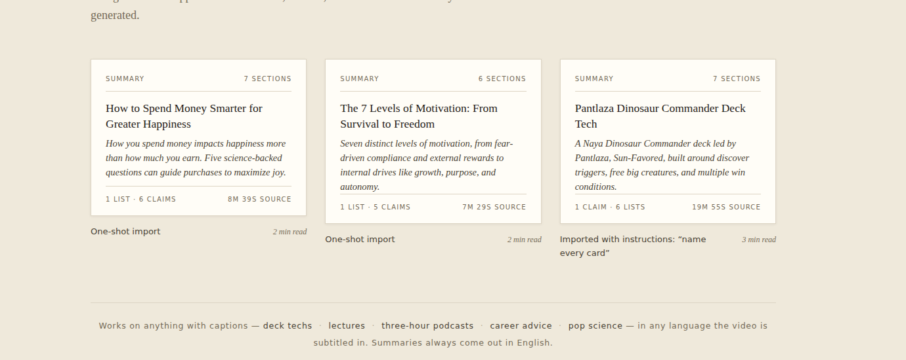
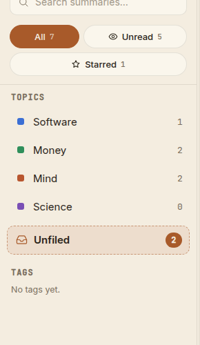
| Detail | Landing | App |
|---|---|---|
| Karten | #fffdf7, 1px Rand, weicher Doppelschatten („liegt auf dem Tisch“) | var(--surface), 1px Rand, kein Schatten (Deck-Strip) |
| Button-Radius | 3px (Buttons), 0px (Karten) | 10px (fr-btn, Suche, Rows), 999px (Lenses, Chips, Badges) |
| Primär-Button | Ink-gefüllt, eckig | Akzent-gefüllt, rund (Add video) |
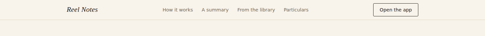
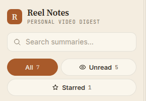
Sortiert nach Wirkung pro Aufwand. Alles Paper-Theme-Werte bzw. Einzeiler in DeckPanel.tsx, sofern nicht anders vermerkt.
| # | Änderung | Wo | Aufwand |
|---|---|---|---|
| 1 | Akzent im Paper-Theme auf Oxblood #8a3324 ziehen (oder Landing zurück auf #a85a2a — eine Entscheidung, eine Zeile) | index.css [data-theme="paper"] --accent | 1 Zeile |
| 2 | TLDR kursiv stellen — der „Leitsatz“-Effekt der Landing | DeckPanel.tsx tldrStyle + fontStyle: 'italic' | 1 Zeile |
| 3 | Timestamps wie beworben: Akzentfarbe, Pfeil →, Underline weg | timestampButtonStyle | 3 Zeilen |
| 4 | Section-Body dunkler: color-mix(in srgb, var(--ink) 75%, var(--muted)) statt muted | bodyStyle | 1 Zeile |
| 5 | Deck-Strip als „Papierbogen“: Hintergrund #fffdf7 (neuer Token --page) + weicher Schatten | index.css + stripStyle | 4 Zeilen |
| 6 | List-Blocks als echte Liste rendern statt items.join(' ') — Lesbarkeit + entspricht Landing-Specimen | DeckPanel.tsx blockText() → eigene Render-Variante | ~20 Zeilen |
| 7 | Hintergrund-Stufe angleichen: --bg #f7f3ea, --surface #fbf7ee (eine Nuance heller, näher an „Papier“) | index.css Paper-Theme | 2 Zeilen Nebenwirkung: alle Panes — vorher anschauen |
| 8 | Wortmarke im Rail kursiv (fr-brand-name), R-Kachel behalten | index.css | 1 Zeile |
| 9 | Optional: Primär-Buttons eckiger (Radius 10 → 6) Richtung Landing-Sprache. Pills (Lenses/Chips) bewusst rund lassen — das ist App-UI, kein Marketing | index.css fr-btn | Geschmack |
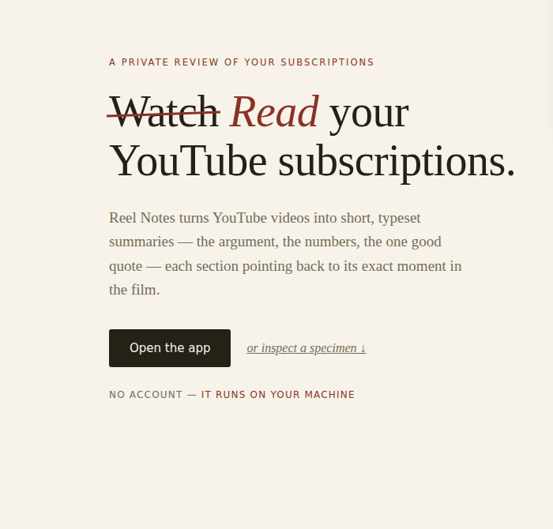
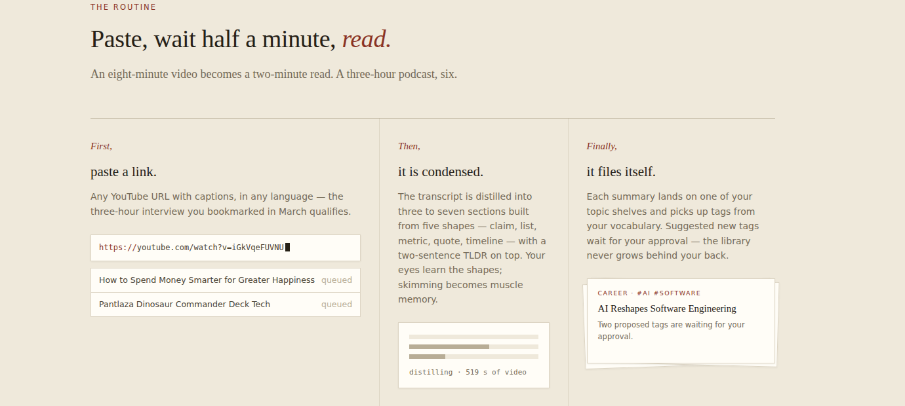
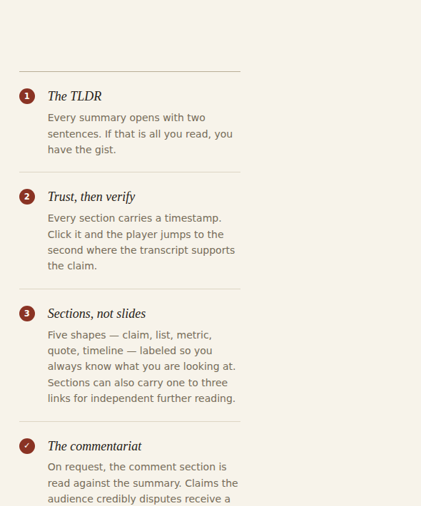
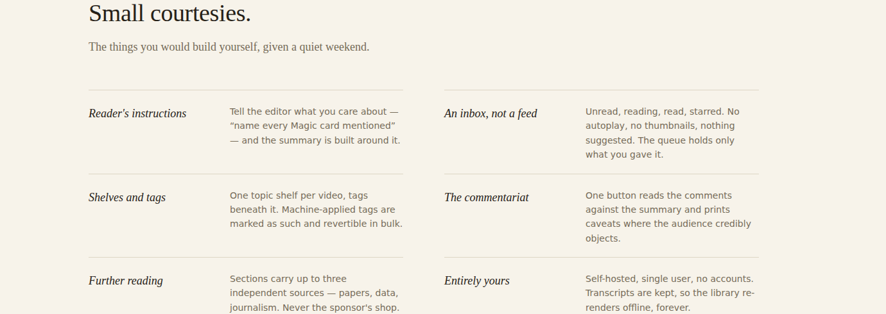
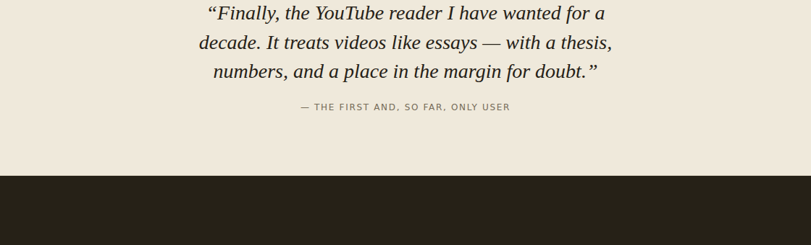
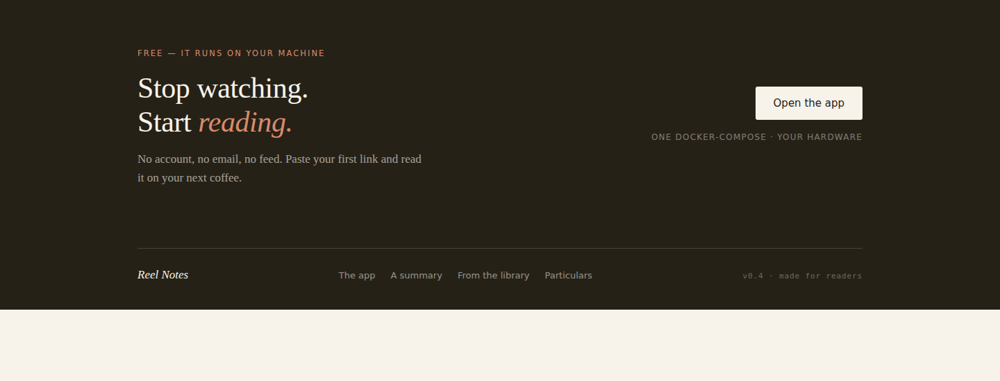
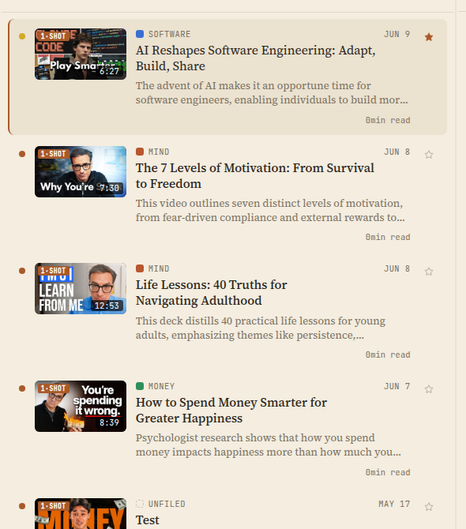
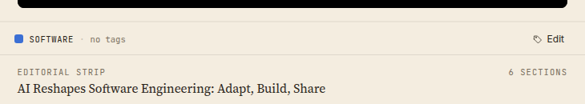
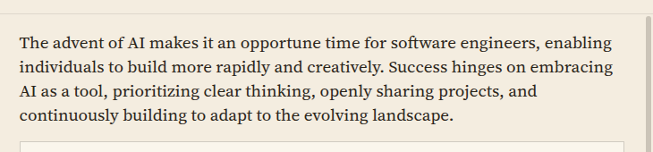
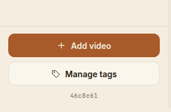